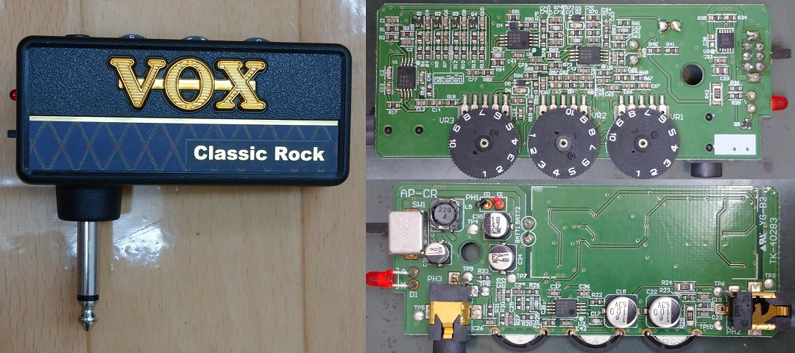
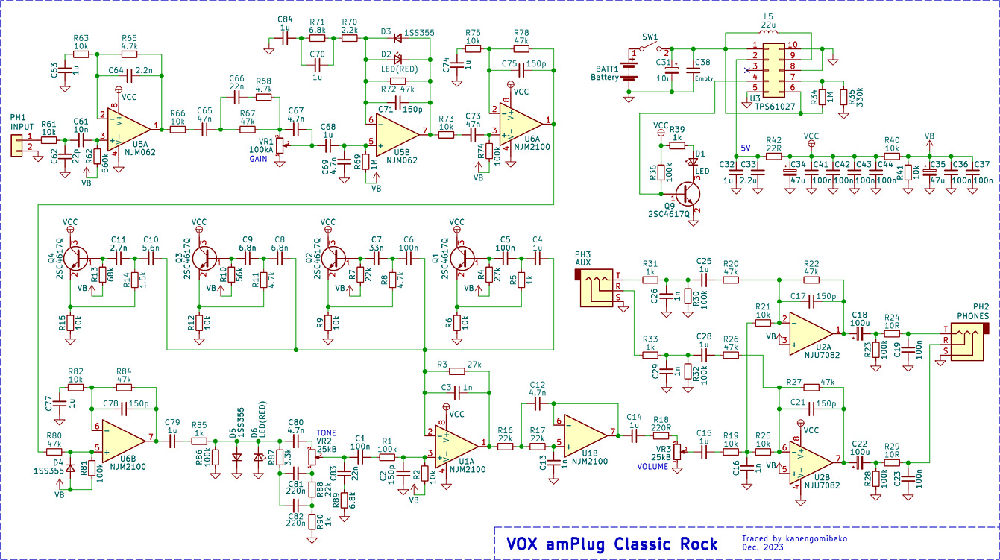
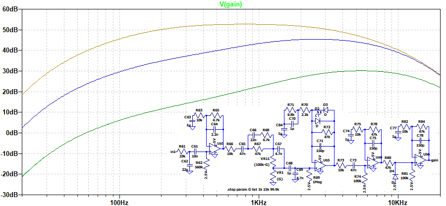
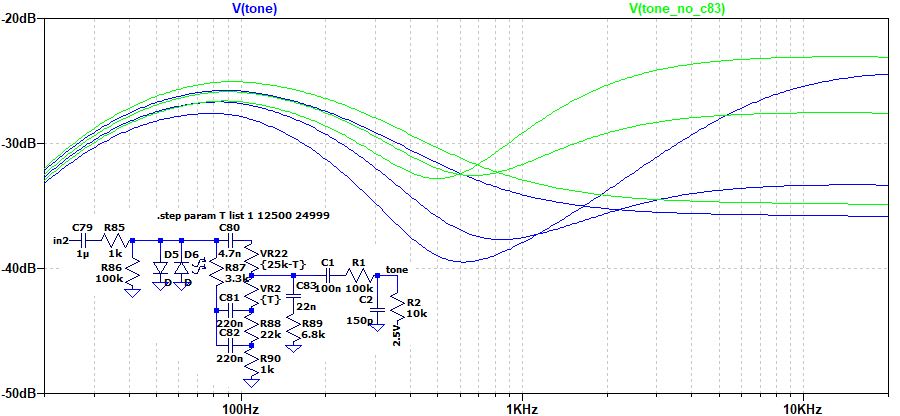
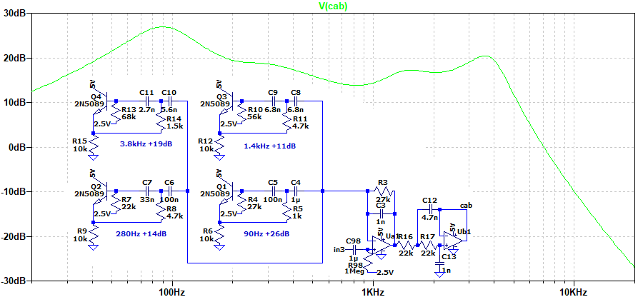
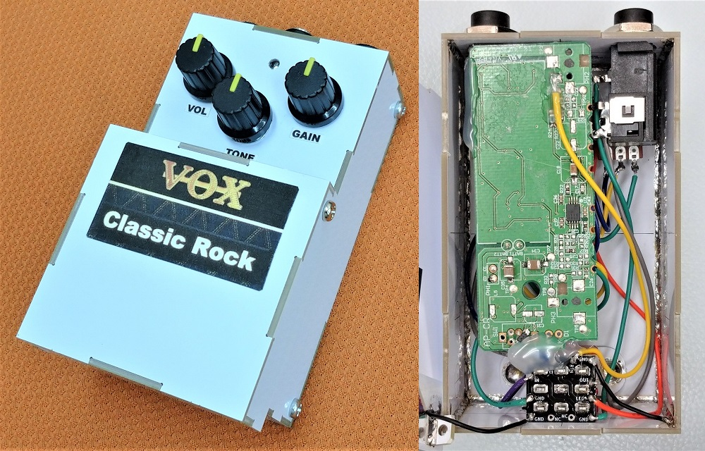

VOX amPlug Classic Rock 解析
2024年01月25日 カテゴリー：修理・改造・解析

ジャンク品として手に入れたVOX amPlug Classic Rockを解析しました。KiCadとLTspiceのデータはGitHubにあります。※amPlug2ではなく、旧機種のamPlugです。
▽回路図

公式ページに「UK製100Wアンプのハイゲインサウンド」と記載があるので、マーシャルアンプを意識していると思われます。多段増幅・多段クリッピングになっているのが特徴的です。TONEの後段は、キャビネットシミュレータだと思われます。電源は5Vに昇圧させてあり、供給電圧が2Vを下回ると電源部LEDが消灯するようになっています。
▽シミュレーション
- 増幅部 （GAIN 1%→50%→100%）

C67はGAINを下げた時に高音域を通過させる働きがあり、通常のアンプではBRIGHTスイッチとなっていることが多いです。非反転増幅回路が4段ありますが、そこでの低音域のカットはそれほど大きくありません。ダイオードクリッピングは非対称で、オペアンプでの歪みも加わっています。
- TONE 0%→50%→100%

C80～C82あたりがマーシャルアンプにあるトーンスタックと同等の回路です。MIDは40%、BASSは70%ぐらいに固定で、TREBLEのみ動かす形となっています。後段にあるC83とR89の影響で、高音域が低下し複雑な動きになっています。このような抵抗とコンデンサはMarshall Schematicsというページでは見つかりませんでしたが、MESA Boogie Dual Rectifier等、他のメーカーでは入っているものがありました。
- キャビネットシミュレータ

トランジスタによるジャイレータ（シミュレーテッドインダクタ）を使った増幅と、オペアンプ正帰還型ローパス・フィルタです。アナログのキャビネットシミュレータを設計したい場合参考になる回路だと思います。実物のインパルスレスポンスよりも低音域が大きくなるよう設計してあるようです（参考ページ→DTM 宅録用にアナログキャビネットシミュレータを自作）。
---2024年2月25日追記---
別のジャンク品を入手したので、キャビネットシミュレータ部分の部品を取り外す等の改造を行ってペダル化しました。ヘッドフォンの接続はできません。アンプライクな歪みとして使えそうな感じです。

あまりしっかりしていませんが、ホットボンドでなんとか基板を固定しています。ケースは、エフェクターケース製作用基板を使いました。